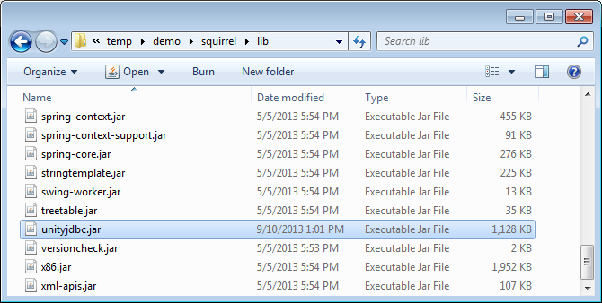
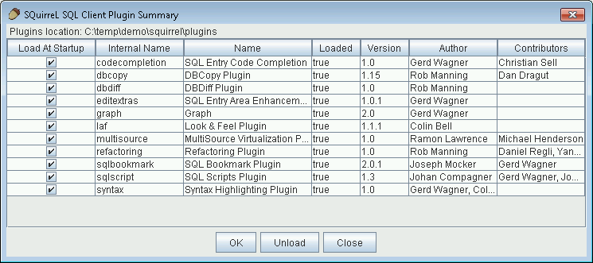
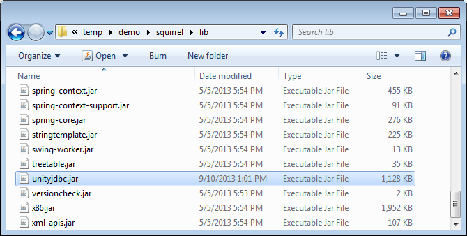
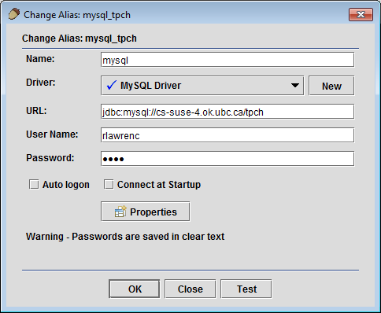
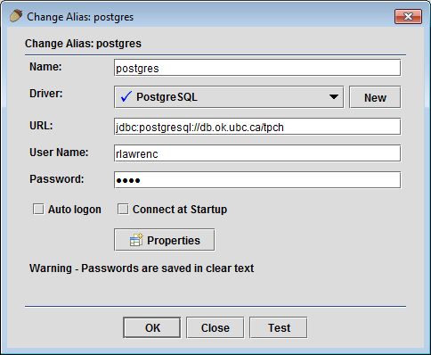
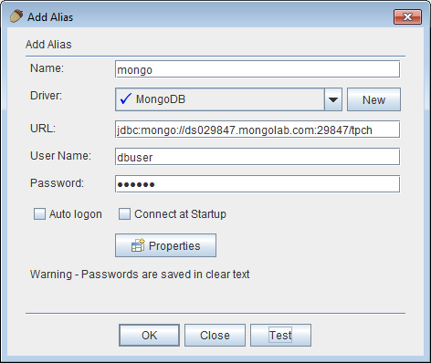
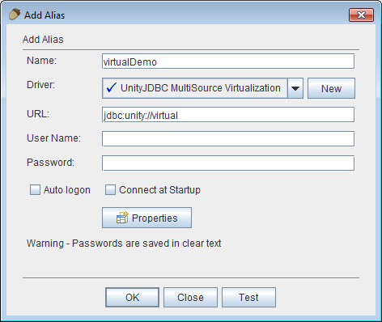

| UnityJDBC JAR Location | Put UnityJDBC JAR in squirrel/lib folder |
|---|---|
 |  |

The multiple source query plugin allows SQuirreL users to create a virtual data source that may consist of multiple data sources on different servers and platforms. The user can enter one SQL query to combine and join information from multiple sources. Any database that has a JDBC driver is supported including NoSQL databases such as MongoDB.
| UnityJDBC JAR Location | Put UnityJDBC JAR in squirrel/lib folder |
|---|---|
|  |
| Microsoft SQL Server | MySQL |
|---|---|
 |  |
| Oracle | Postgres |
 |  |
| Register MongoDB Driver | MongoDB |
 |  |
| Create Virtual Source | Connect to Virtual Source |
|---|---|
|  |  |


The plugin uses features of the UnityJDBC driver to perform virtualization and translate functions that are not implemented by certain sources. For example, MSSQL does not support TRIM(), but you can do the same result using RTRIM(LTRIM()). Unity will automatically translate a TRIM() function specified in a MSSQL query to the correct syntax supported by the database.

This translation is supported for common databases and can be freely extended by user-defined functions and translations for each database dialect.
EXPLAIN can be used to understand how a SQL query is translated to queries on individual sources.
The plugin saves its configuration information in the folder multisource under the SQuirreL user folder. If no password is specified when creating an alias, schema and connection informtaion (including passwords) are stored in plain text. To encrypt the configuration files, specify a password during connection (user id is ignored).

Once a virtualization has been created, all the information necessary is available in the XML files created and stored in the plugin/multisource folder in the SQuirreL user directory. These files can be copied and moved to another location and used with any Java/JDBC program or reporting software. These files can be copied directly or exported from within SQuirreL.

Existing XML configuration files can be used by specifying an absolute or relative path in the JDBC URL. For example, if the user has saved the sources.xml file (and the associated schema files for sources in the directory C:\tmp, then a JDBC connection URL is: jdbc:unity://c:\tmp\sources.xml.
The plugin source code, like all of SQuirreL, is released under the GNU Lesser General Public License. The UnityJDBC virtualization driver is released under a commercial license. However, the UnityJDBC driver included in the plugin is fully functioning with no time limits allowing an unlimited number of sources and queries. The only limitation is the size of the result set is limited to the first 100 rows. (Note there is no limit on the number of rows extracted from each source. So SELECT COUNT(*) FROM table with a 1 million row table works as it only returns one result row.) Use LIMIT 100 to get the first 100 results of a query.
For more information and technical support for the MultiSource plugin contact:
Dr. Ramon Lawrence, ramon.lawrence@ubc.ca, 250-807-9390
Associate Professor, Computer Science, University of British Columbia Okanagan, Canada
UnityJDBC driver information: www.unityjdbc.com